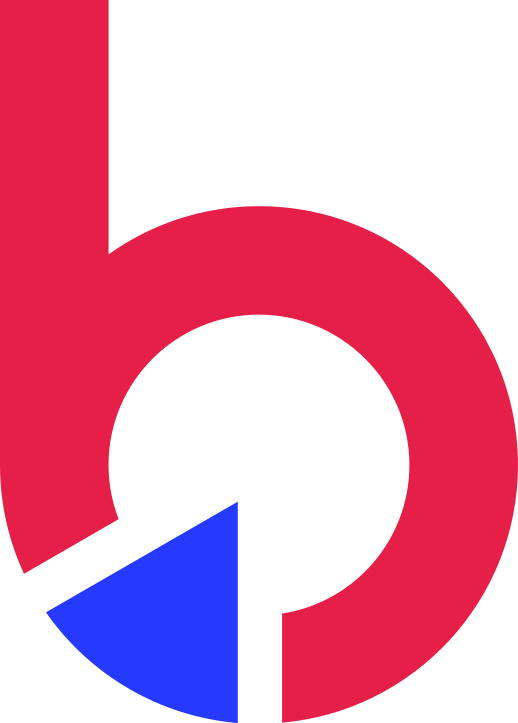

Cores
Duas cores de marca (azul elétrico e vermelho) sobre um fundo creme, com um laranja reservado para o hover dos botões.
Primária e secundária
#2538FFrgb(37, 56, 255)Primária. Variável CSS --benner-blue. Menu, outline, bordas, seções azuis.#E51E47rgb(229, 30, 71)Secundária. Botão principal, títulos de destaque, ícones, filetes.Apoio
#FBA747rgb(251, 167, 71)Hover de todos os botões, ícones sociais, links no escuro.#162299rgb(22, 34, 153)Início do degradê sobre imagens.Neutras
#F8F5F1rgb(248, 245, 241)Fundo dominante das páginas.#FFFFFFrgb(255, 255, 255)Cards e texto sobre cor.#333333rgb(51, 51, 51)Texto e títulos no claro.#1A1E21rgb(26, 30, 33)Rodapé e banners escuros.#DBDBDBrgb(219, 219, 219)Divisores e bordas.#C5C5C5rgb(197, 197, 197)Texto secundário no escuro.Degradês
Tipografia
Fonte mundial (Adobe Fonts), pesos 400, 600 e 700. Os títulos usam peso regular, espaçamento negativo e linhas apertadas. Aqui a mundial é substituída pela Montserrat, que o próprio site carrega do Google Fonts sem usar.
Botões
Todos seguem o mesmo padrão: caixa alta, peso 400, cantos quase retos (0.3rem), padding 1rem × 2rem, sem sombra, transição de 0.4s. No hover, os botões sólidos ficam laranja com texto preto. Passe o mouse para ver.
Vermelho = ação principal · Azul = destaque no menu · Outline azul = ação secundária · Branco = sobre fundo azul
Logos
O site só publica versões brancas do logo, para usar sobre cor ou sobre fundo escuro. O ponto do "b" é vermelho (#E51F48).

b-mark.svgForma, sombra e espaço
Border-radius
0.3rem (111×) · 12px · 42px · 50%
Padrão quase reto.
Sombra de card
0 15px 15px rgba(0,0,0,.15)
Também 0 0 2rem rgba(0,0,0,.04) (suave) e 0 8px 28px rgba(0,0,0,.28) (elevada).
Espaçamentos
| rem | uso |
|---|---|
| 1rem | 365× |
| 2rem | 219× |
| 0.5rem | 150× |
| 0.3rem | 104× |
| 0.75rem | 100× |
| 2.5rem | 94× |